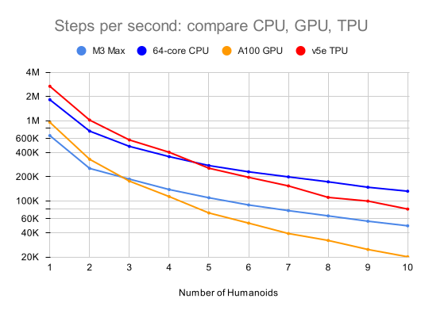

MuJoCo XLA (MJX)#
备注
本页由 AI（Claude Sonnet）根据 MuJoCo 官方英文文档（2026-11-16 版）翻译，仅供学习参考；如有出入，以英文原版为准。术语对照见资料包中的 术语表.md 。
MuJoCo XLA (MJX) 为 MuJoCo 的多种实现提供了 JAX API。MJX 位于 MuJoCo 仓库的 mjx 目录下。
MJX 允许用户在 XLA 编译器支持的所有计算硬件上运行 MuJoCo。我们提供了 MuJoCo 的 JAX 重新实现（MJX-JAX）。MJX-JAX 可运行于：Nvidia 和 AMD GPU、Apple Silicon 以及 Google Cloud TPU。MuJoCo 的 Warp 实现（MJX-Warp）专门针对 NVIDIA GPU 优化性能，解决了 MJX-JAX 中存在的若干性能瓶颈。
MJX 以名为 mujoco-mjx 的独立包发布在 PyPI 上。它依赖主 mujoco 包进行模型（model）编译和可视化（visualization），并且依赖 MuJoCo Warp 来提供 MuJoCo 的 Warp 实现。
mujoco-mjx on PyPI.
It depends on the main mujoco package for model compilation and visualization, and also depends on
MuJoCo Warp for the Warp implementation of MuJoCo.安装#
推荐通过 PyPI 安装此包：
pip install mujoco-mjx
要在 MJX 中使用 MuJoCo Warp，请通过以下方式安装：
pip install mujoco-mjx[warp]
MuJoCo 库的副本已作为此包的依赖项提供，无需单独下载或安装。
最小示例#
安装完成后，可以通过导入 mujoco.mjx 包来使用 MJX。调用 mjx.put_model 将 MuJoCo 模型放置到设备上，调用 mjx.make_data 在设备上创建 MuJoCo 数据。然后即可使用 mjx.step 推进仿真。
mujoco.mjx package. A MuJoCo model is placed on device by calling mjx.put_model,
and a MuJoCo data is created on device with mjx.make_data. You can then step the simulation with mjx.step.# Throw a ball at 100 different velocities.
import jax
import mujoco
from mujoco import mjx
XML=r"""
<mujoco>
<worldbody>
<body>
<freejoint/>
<geom size=".15" mass="1" type="sphere"/>
</body>
</worldbody>
</mujoco>
"""
model = mujoco.MjModel.from_xml_string(XML)
mjx_model = mjx.put_model(model)
@jax.vmap
def batched_step(vel):
mjx_data = mjx.make_data(mjx_model)
qvel = mjx_data.qvel.at[0].set(vel)
mjx_data = mjx_data.replace(qvel=qvel)
pos = mjx.step(mjx_model, mjx_data).qpos[0]
return pos
vel = jax.numpy.arange(0.0, 1.0, 0.01)
pos = jax.jit(batched_step)(vel)
print(pos)
MJX 的实现#
MJX 目前支持 MuJoCo 的两种实现：纯 JAX 实现和 Warp 实现。
MJX-Warp#
MJX-Warp 使用 MuJoCo Warp，这是 MuJoCo 在硬件加速设备上功能最完整的实现。MJX-Warp 解决了 MJX-JAX 中围绕接触（contact）和约束（constraint）的关键性能瓶颈。
请注意，与 MJX-JAX 不同，MJX-Warp 不支持自动微分，并且近期没有支持自动微分的计划。
基本用法#
我们通过向 mjx.put_model 和 mjx.make_data 函数传入 impl='warp' 来创建模型和数据：
impl='warp' to the mjx.put_model and mjx.make_data functions:mj_model = mujoco.MjModel.from_xml_path(...)
model = mjx.put_model(mj_model, impl='warp')
data = mjx.make_data(mj_model, impl='warp', naconmax=naconmax, njmax=njmax)
请注意，我们向 mjx.make_data 传入了两个额外的参数：
mjx.make_data:naconmax定义所有世界（world）合计的最大接触数。naconmaxdefines the maximum number of contacts for all worlds combined.njmax定义每个世界的最大约束数。如果您正在开发新的场景，应当在查看器中加载场景来调整这些参数，并在发生溢出时相应地增大数值。请将naconmax按您最终在jax.vmap中需要的环境数量进行缩放！njmaxdefines the maximum number of constraints per world. If you are developing a new scene, these parameters should be tuned by loading them in the viewer and increasing the values accordingly as overflows occur. Scalenaconmaxby the number of environments you’ll eventually need in ajax.vmap!
接触#
由于 JAX 和 Warp 在接触缓冲区的实现上有所不同，接触位于私有的 mjx.Data._impl 中，而不是 mjx.Data.contact。我们鼓励用户仅通过接触传感器读取接触信息。
mjx.Data._impl instead of mjx.Data.contact. We encourage users to read out contacts solely through
contact sensors.有关在实际中使用 MJX-Warp 的更多细节和示例，请参见 MuJoCo Playground 中的公告。
批量 Data 更新#
Data updates在 MJX-JAX 中，可以使用 jax.tree.map(jax.numpy.where, done, reset_data, data) 重置一批环境中的一部分。然而，由于内部实现细节，这种方法在 MJX-Warp 中无法开箱即用。
jax.tree.map(jax.numpy.where, done, reset_data, data). However, this approach does not work out-of-the-box for
MJX-Warp due to internal implementation details.为了让两种实现都支持批量 Data 更新，MJX 在 Data 对象上提供了统一的 where 方法：
Data updates for both implementations, MJX provides a unified where method on Data objects:data = data.where(done, reset_data)
图模式#
mjx.put_model 函数接受 graph_mode 参数来配置 CUDA 图捕获行为，该参数由 mjx.warp.GraphMode 枚举暴露。从 JAX 调用时，CUDA 图由 Warp 外部函数接口（Foreign Function interface）捕获并缓存，以帮助提升运行时性能。更多细节请参见
Warp JAX 互操作文档。图模式可以按如下方式配置：
mjx.put_model function accepts a graph_mode argument to configure the CUDA graph capture behavior,
exposed by the mjx.warp.GraphMode enum. When called from JAX, CUDA graphs are captured by the Warp
Foreign Function interface and are cached to help improve runtime performance. See the
Warp JAX interoperability documentation
for more details. The graph mode can be configured as follows:import mujoco.mjx.warp as mjxw
model = mjx.put_model(mj_model, impl='warp', graph_mode=mjxw.GraphMode.WARP_STAGED)
各种图模式在性能上有一定的权衡：
JAX：不适用于 MuJoCo Warp，因为 Warp 实现会创建无法并入 XLA 图的子图节点。JAX: Does not work with MuJoCo Warp since the Warp implementation creates child graph nodes that cannot be rolled up into the XLA graph.WARP：（默认）Warp 在内部捕获 CUDA 图，并使用来自 XLA 的缓冲区指针对其进行缓存。JAX 和 XLA 经常以意想不到的方式优化内存布局，并可能在两次调用 Warp 之间更改缓冲区指针。由于 Warp/CUDA 需要稳定的指针，如果输入和输出缓冲区指针发生变化，CUDA 图将被重新捕获。图捕获的运行开销通常很大，因此 JAX 的指针不稳定导致的过多图重新捕获会降低性能。如果您的 JAX 程序的瓶颈在于过多的图捕获，请考虑使用WARP_STAGED或WARP_STAGED_EX。WARP: (Default) Warp captures the CUDA graph internally and caches it using buffer pointers from XLA. JAX and XLA often optimize memory layouts in unexpected ways and may change buffer pointers between calls to Warp. Since Warp/CUDA require stable pointers, CUDA graphs will be re-captured if the input and output buffer pointers change. Graph captures are typically expensive to run, so excessive graph recaptures due to unstable pointers from JAX will degrade performance. If your JAX program is bottlenecked by excessive graph captures, considerWARP_STAGEDorWARP_STAGED_EX.WARP_STAGED：会创建暂存缓冲区（因此会增加内存占用），并将 XLA 缓冲区复制进出暂存缓冲区，使 CUDA 图获得一致的内存指针。CUDA 图捕获只会发生一次。WARP_STAGED: Staging buffers are created (thus increasing memory usage) and the XLA buffers are copied in and out of staging buffers so that the CUDA graph gets consistent memory pointers. A CUDA graph capture occurs only once.WARP_STAGED_EX：与WARP_STAGED类似，但复制操作被移到初始图捕获之外。WARP_STAGED_EX: Similar toWARP_STAGEDbut the copy operations are moved outside the initial graph capture.
根据您的 JAX 程序处理内存的方式，您可能需要使用 WARP_STAGED 或 WARP_STAGED_EX 来避免过多的图捕获。
WARP_STAGED or WARP_STAGED_EX to avoid
excessive graph captures.下表展示了不同图模式之间权衡的一个示例。我们报告了不同配置在 Humanoid 和 Aloha Pot 场景上的每秒步数（Steps per Second，SPS）。请注意，如果我们强制每一步都重新捕获图，性能会显著下降：
配置 Configuration |
Humanoid |
Aloha Pot |
|---|---|---|
纯 Warp（无 JAX FFI） Pure Warp (No JAX FFI) |
3.35M |
2.45M |
JAX FFI ( |
2.96M |
2.33M |
JAX FFI（ JAX FFI ( WARP with forced recaptures on every step) |
0.80M |
0.65M |
为了减少重新捕获，我们可以使用 WARP_STAGED 或 WARP_STAGED_EX。由于这些模式引入了暂存缓冲区，它们的性能可能低于 WARP，但如果 JAX-Warp FFI 层中存在过多的图捕获，它们的性能会明显优于 WARP。
WARP_STAGED or WARP_STAGED_EX. Since these modes introduce staging buffers,
they may exhibit lower performance than WARP, but they are significantly more performant than WARP if there are
excessive graph captures in the JAX-Warp FFI layer.配置 Configuration |
Humanoid |
Aloha Pot |
|---|---|---|
JAX FFI ( |
2.67M |
1.96M |
JAX FFI（ JAX FFI ( WARP with forced recaptures on every step) |
0.80M |
0.65M |
批量渲染#
MJX-Warp 包含一个硬件加速的批量渲染器（rendering），用于在多个并行环境中生成像素观测（例如 RGB 和深度）。
要使用批量渲染器，必须先创建一个渲染上下文来分配必要的缓冲区。请注意，并行世界的数量（nworld）在创建上下文时就已固定。create_render_context 返回一个渲染上下文对象，可直接访问缓冲区元数据（相机分辨率、地址等）。调用 .pytree() 可获得轻量级的 JAX pytree，应将其传入经 jit/vmap 编译的函数：
nworld) is fixed when creating the context.
create_render_context returns a render context object that provides direct access to buffer
metadata (camera resolution, addresses, etc.). Call .pytree() to obtain the lightweight JAX
pytree that should be passed into jit/vmap-compiled functions:from mujoco.mjx import create_render_context
rc = create_render_context(
mjm=m,
nworld=nworld,
cam_res=(width, height),
use_textures=True,
use_shadows=True,
render_rgb=[True] * ncam,
render_depth=[False] * ncam,
enabled_geom_groups=[0, 1, 2],
)
请在程序的整个生命周期内持有 rc 的引用，并将 rc.pytree() 传给下游的 JAX 函数。该 pytree 是一个轻量级句柄，通过内部注册表指回上下文。
rc for the lifetime of your program and pass rc.pytree() to
downstream JAX functions. The pytree is a lightweight handle that refers back to the
context via an internal registry.创建上下文之后，就可以在编译后的 JAX 函数中渲染图像。这包括更新包围体层次结构（BVH）并执行光线投射器：
from mujoco.mjx import get_rgb
@jax.jit
def render_fn(mx, d, rc_pytree):
# 1. Update the BVH for the current scene state
d = mjx.refit_bvh(mx, d, rc_pytree)
# 2. Render all configured cameras
pixels, _, d = mjx.render(mx, d, rc_pytree)
# 3. Extract the RGB tensor for the first camera (index 0)
rgb = get_rgb(rc_pytree, 0, pixels)
return rgb, d
rgb, d = render_fn(mx, d, rc.pytree())
备注
refit_bvh() 和 render() 会更新 Data 内部的执行令牌（d._impl._jax_token）。将 d 依次传递给 refit_bvh 和 render 会建立显式的数据依赖，防止 XLA 在迭代或展开的循环之间对 BVH 更新和光线投射过程重新排序。
refit_bvh() and render() update an internal execution token
(d._impl._jax_token) within Data. Passing d sequentially through
refit_bvh and render creates an explicit data dependency, preventing XLA from reordering BVH
updates and raycasting passes across iterations or unrolled loops.警告
批量维度 nworld 在通过 create_render_context() 创建渲染上下文时就已固定，因为底层的 Warp 渲染上下文会为 JAX 不可见的 nworld 个环境分配缓冲区。render() 始终返回前导批量维度大小为 nworld 的输出。因此存在一个已知问题：render() 与 jax.vmap(jax.lax.scan) 不能很好地配合。
nworld is fixed when the render context is created via
create_render_context() since the underlying Warp render context allocates
buffers for nworld environments that are not visible to JAX. render()
will always return outputs with a leading batch dimension of size nworld. Because of this,
there is a known issue where render() does not play nice with a
jax.vmap(jax.lax.scan).使用 pmap 的多 GPU 渲染#
pmap要跨多个 GPU 渲染，请向 create_render_context 传入 devices，为每个设备创建一个渲染上下文。
devices to
create_render_context.ndevices = jax.local_device_count()
nworld_per_device = nworld // ndevices
# Create one render context for all devices
rc = create_render_context(
mjm=m,
nworld=nworld_per_device,
devices=[f'cuda:{i}' for i in range(ndevices)],
cam_res=(width, height),
)
然后使用 jax.pmap 在各设备间并行渲染。完整示例请参见
visualize_render.py。
jax.pmap to parallelize the rendering across devices. See the complete example in
visualize_render.py.MJX-JAX#
MJX-JAX 是 MuJoCo 的重新实现，使用与 MuJoCo 实现相同的算法。不过，为了充分利用 JAX，MJX 有意在少数地方偏离了 MuJoCo API（见下文）。对于需要一个在小场景上性能良好、并大致支持梯度的模拟器的用户，MJX-JAX 是一个不错的选择。其他情况下，我们建议用户使用 MJX-Warp。
MJX-JAX 通过 JAX 框架，使 MuJoCo 能够在 XLA 编译器支持的所有计算硬件上运行（AMD GPU、Apple Silicon 和 Google Cloud TPU）。
MJX-JAX 的 API 与 MuJoCo API 中的主要仿真函数保持一致，尽管缺少一些功能。API 文档对两个库都适用，我们会在下面的说明中指出 MJX-JAX 不支持的功能。
MJX-JAX 是 Google Brax 物理与强化学习库中广义物理流水线的后继者。MJX-JAX 由 MuJoCo 和 Brax 的核心贡献者共同构建。Brax 依赖 mujoco-mjx 包，Brax 现有的广义流水线已不再维护。
mujoco-mjx package, and Brax’s existing
generalized pipeline is no longer maintained.教程 notebook#
下面的 IPython notebook 演示了如何使用 MJX 结合强化学习来训练人形机器人和四足机器人行走： 。
。
深入用法#
结构体#
在加速器设备上运行 MJX 函数之前，必须通过 mjx.put_model 和 mjx.put_data 函数将结构体复制到设备上。将 mjModel 放置到设备上会得到 mjx.Model，将 mjData 放置到设备上会得到 mjx.Data：
mjx.put_model
and mjx.put_data functions. Placing an mjModel on device yields an mjx.Model. Placing an mjData on
device yields an mjx.Data:model = mujoco.MjModel.from_xml_string("...")
data = mujoco.MjData(model)
mjx_model = mjx.put_model(model)
mjx_data = mjx.put_data(model, data)
这些 MJX 变体与对应的 MuJoCo 结构体相互映射，但有几个关键区别：
mjx.Model和mjx.Data包含被复制到设备上的 JAX 数组。mjx.Modelandmjx.Datacontain JAX arrays that are copied onto device.mjx.Model和mjx.Data中缺少一些字段，这些字段对应于特定 MuJoCo 实现私有的功能，或者不受支持的功能。Some fields are missing frommjx.Modelandmjx.Datafor features that are private to a specific implementation of MuJoCo, or that are unsupported.mjx.Model和mjx.Data中的 JAX 数组支持添加批量维度。批量维度是表达域随机化（对mjx.Model而言）或用于强化学习的高吞吐量仿真（对mjx.Data而言）的自然方式。JAX arrays inmjx.Modelandmjx.Datasupport adding batch dimensions. Batch dimensions are a natural way to express domain randomization (in the case ofmjx.Model) or high-throughput simulation for reinforcement learning (in the case ofmjx.Data).mjx.Model和mjx.Data中的 Numpy 数组是控制 JIT 编译输出的结构性字段。修改这些数组会迫使 JAX 重新编译 MJX 函数。例如，jnt_limited是一个从 mjModel 按引用传递的 numpy 数组，它决定是否应用关节限位（limit）约束。如果修改了jnt_limited，JAX 会重新编译 MJX 函数。另一方面，jnt_range是可以在运行时修改的 JAX 数组，并且只会应用于jnt_limited字段所指定的有限位的关节。Numpy arrays inmjx.Modelandmjx.Dataare structural fields that control the output of JIT compilation. Modifying these arrays will force JAX to recompile MJX functions. As an example,jnt_limitedis a numpy array passed by reference from mjModel, which determines if joint limit constraints should be applied. Ifjnt_limitedis modified, JAX will re-compile MJX functions. On the other hand,jnt_rangeis a JAX array that can be modified at runtime, and will only apply to joints with limits as specified by thejnt_limitedfield.
mjx.Model 和 mjx.Data 都不应手动构造。可以通过调用 mjx.make_data 来创建 mjx.Data，它对应于 MuJoCo 中的 mj_makeData 函数：
mjx.Model nor mjx.Data are meant to be constructed manually. An mjx.Data may be created by calling
mjx.make_data, which mirrors the mj_makeData function in MuJoCo:model = mujoco.MjModel.from_xml_string("...")
mjx_model = mjx.put_model(model)
mjx_data = mjx.make_data(model)
在 vmap 内部构造批量 mjx.Data 结构时，使用 mjx.make_data 可能更为合适。
mjx.make_data may be preferable when constructing batched mjx.Data structures inside of a vmap.函数#
MuJoCo 函数以同名的 MJX 函数形式暴露，但名称遵循符合 PEP 8 的命名规范。大部分主要仿真函数和一些用于前向仿真的子组件可从顶层 mjx 模块获得。
mjx module.MJX 函数默认不会被 JIT 编译——我们将对 MJX 函数进行 JIT 的工作留给用户，或者由用户对引用 MJX 函数的自有函数进行 JIT。请参见下面的最小示例。
枚举和常量#
MJX 枚举以 mjx.EnumType.ENUM_VALUE 的形式提供，例如 mjx.JointType.FREE。不受支持的 MJX 功能所对应的枚举会从 MJX 枚举声明中省略。MJX 不声明任何常量，而是直接引用 MuJoCo 常量。
mjx.EnumType.ENUM_VALUE, for example mjx.JointType.FREE. Enums for unsupported MJX
features are omitted from the MJX enum declaration. MJX declares no constants but references MuJoCo constants directly.实用的命令行脚本#
mujoco-mjx 包附带两个命令行脚本：
mujoco-mjx package:mjx-testspeed --mjcf=/PATH/TO/MJCF/ --base_path=.
该命令接受 MJCF 文件的路径以及可选参数（使用 --help 获取更多信息），并计算有助于性能调优的指标。该命令会输出总仿真时间、总每秒步数和总实时因子等信息（这里的总数是指所有可用设备的合计）。
--help for more information)
and computes helpful metrics for performance tuning. The command will output, among other things, the total
simulation time, the total steps per second and the total realtime factor (here total is across all available
devices).mjx-viewer --help
该命令在 simulate 查看器中启动 MJX 模型，使您可以对模型进行可视化和交互。请注意，这使用 MJX 物理（而不是 C 版 MuJoCo）来推进仿真，因此例如在调试求解器（solver）参数时会很有帮助。
功能对等#
MJX 支持 MuJoCo 的大部分主要仿真功能，可在硬件加速设备上执行。如果要求将引用了不受支持功能的 mjModel 复制到设备上，MJX 会引发异常。
下表比较了 MJX-Warp 和 MJX-JAX 相对于 MuJoCo 的功能支持情况：
类别 Category |
MJX-Warp |
MJX-JAX |
|---|---|---|
动力学 Dynamics |
||
可微性 [1] Differentiability [1] |
✗ |
✓ |
全部 All |
|
|
全部 All |
|
|
全部 All |
|
|
全部 All |
|
|
全部 All |
|
|
全部 All |
PLANE, HFIELD, SPHERE, CAPSULE, BOX, MESH are fully implemented. ELLIPSOID and
CYLINDER are implemented but only collide with other primitives [3], note that BOX is implemented as a mesh. |
|
全部 All |
|
|
全部 All |
|
|
除 All except IMPLICITFAST midpoint integrator feature |
|
|
全部 All |
|
|
全部 All |
1, 3, 4, 6（1 不支持与 1, 3, 4, 6 (1 is not supported with ELLIPTIC) |
|
除 All except PGS, noslip |
|
|
流体模型 Fluid Model |
全部 All |
仅 惯性模型 Inertia model only |
全部 All |
|
|
全部 All |
||
除 All except PLUGIN |
参见下面的说明 [2] See notes below [2] |
|
Flex |
|
不支持。 Not supported. |
质量矩阵格式 Mass matrix format |
稀疏和稠密 Sparse and Dense |
稀疏和稠密 Sparse and Dense |
雅可比格式 Jacobian format |
DENSE and SPARSE |
仅 DENSE only |
光源 Lights |
✓ |
位置和方向 Positions and directions |
光线 Ray |
全部，网格、hfield 和 flex 使用 BVH All, BVH for meshes, hfield, and flex |
网格较慢，hfield 和 flex 未实现 Slow for meshes, hfield and flex unimplemented |
性能调优#
MJX-Warp#
MJX-Warp 缓解了 MJX-JAX 在接触和约束数量扩展方面的性能问题。MJX-Warp 还完全支持网格碰撞。关于 MuJoCo Warp 性能调优的内容，请参见此处的相应章节。
MJX-JAX#
为了让 MJX-JAX 表现良好，应当将一些配置参数从 MuJoCo 的默认值进行调整：
- option/iterations 和 option/ls_iterations
iterations 和 ls_iterations 属性——分别控制求解器迭代和线搜索迭代——应当降低到刚好能保持仿真稳定的程度。在强化学习中，精确的求解器力并不那么重要，因为强化学习中经常使用域随机化为物理引入噪声以实现 sim-to-real。
NEWTON求解器只需很少的（通常只有一次）求解器迭代就能获得出色的收敛性，并且在 GPU 上表现良好。目前CG是 TPU 上更好的选择。The iterations and ls_iterations attributes—which control solver and linesearch iterations, respectively—should be brought down to just low enough that the simulation remains stable. Accurate solver forces are not so important in reinforcement learning in which domain randomization is often used to add noise to physics for sim-to-real. TheNEWTONSolver delivers excellent convergence with very few (often just one) solver iterations, and performs well on GPU.CGis currently a better choice for TPU.- contact/pair
考虑为碰撞检测（collision detection）显式标记 geom，以减少 MJX-JAX 在每一步中必须考虑的接触数量。仅启用显式的有效接触列表，可以对 MJX-JAX 的仿真性能产生显著影响。要做好这一点，往往需要对任务有所了解——例如，OpenAI Gym Humanoid 任务会在人形开始跌倒时重置，因此不需要与地面的完整接触。
Consider explicitly marking geoms for collision detection to reduce the number of contacts that MJX-JAX must consider during each step. Enabling only an explicit list of valid contacts can have a dramatic effect on simulation performance in MJX-JAX. Doing this well often requires an understanding of the task – for example, the OpenAI Gym Humanoid task resets when the humanoid starts to fall, so full contact with the floor is not needed.- maxhullvert
将 maxhullvert 设置为
64或更小，以获得更好的凸网格碰撞性能。Set maxhullvert to64or less for better convex mesh collision performance.- option/flag/eulerdamp
禁用
eulerdamp有助于提升性能，并且通常不影响稳定性。有关该标志语义的详细信息，请阅读数值积分一节。Disablingeulerdampcan help performance and is often not needed for stability. Read the Numerical Integration section for details regarding the semantics of this flag.- option/jacobian
显式设置为 "dense" 或 "sparse" 可能会根据您的设备加速仿真。现代 TPU 具有专门用于快速处理稀疏矩阵的硬件，而 GPU 只要稠密矩阵能放进设备，往往在稠密矩阵上更快。因此，MJX-JAX 中默认 "auto" 设置的行为是：如果
nv >= 60（60 个或更多自由度（degrees of freedom）），或者 MJX-JAX 检测到默认后端是 TPU，则使用 sparse，否则使用 "dense"。对于 TPU，在牛顿求解器中使用 "sparse" 可以将仿真加速 2 到 3 倍。对于 GPU，只要稠密矩阵能放进设备，选择 "dense" 可能带来较为温和的 10% 到 20% 的加速。Explicitly setting “dense” or “sparse” may speed up simulation depending on your device. Modern TPUs have specialized hardware for rapidly operating over sparse matrices, whereas GPUs tend to be faster with dense matrices as long as they fit onto the device. As such, the behavior in MJX-JAX for the default “auto” setting is sparse ifnv >= 60(60 or more degrees of freedom), or if MJX-JAX detects a TPU as the default backend, otherwise “dense”. For TPU, using “sparse” with the Newton solver can speed up simulation by 2x to 3x. For GPU, choosing “dense” may impart a more modest speedup of 10% to 20%, as long as the dense matrices can fit on the device.- 粗测阶段Broadphase
MuJoCo 开箱即用地处理粗测阶段（broadphase）剔除，而 MJX-JAX 则需要额外的参数。要使用近似版本的粗测阶段，请使用实验性的自定义 numeric 参数
max_contact_points和max_geom_pairs。max_contact_points限制针对每种 condim 类型发送给求解器的接触点数量。max_geom_pairs限制针对每种 geom 类型对发送给相应碰撞函数的 geom 对总数。例如，shadow hand 环境就使用了这些参数。While MuJoCo handles broadphase culling out of the box, MJX-JAX requires additional parameters. For an approximate version of broadphase, use the experimental custom numeric parametersmax_contact_pointsandmax_geom_pairs.max_contact_pointscaps the number of contact points sent to the solver for each condim type.max_geom_pairscaps the total number of geom-pairs sent to respective collision functions for each geom-type pair. As an example, the shadow hand environment makes use of these parameters.
GPU 性能#
应当设置以下环境变量：
XLA_FLAGS=--xla_gpu_triton_gemm_any=true这会对任何受支持的 GEMM 启用基于 Triton 的 GEMM（矩阵乘法）发射器。这在 NVIDIA GPU 上可带来 30% 的加速。如果您有多个 GPU，启用与GPU 之间通信相关的标志也可能使您受益。
This enables the Triton-based GEMM (matmul) emitter for any GEMM that it supports. This can yield a 30% speedup on NVIDIA GPUs. If you have multiple GPUs, you may also benefit from enabling flags related to communication between GPUs.
🔪 MJX-JAX 的锋利之处（The Sharp Bits）🔪#
GPU 和 TPU 具有独特的性能权衡，MJX-JAX 也会受其影响。MJX-JAX 专长于使用可在 SIMD 硬件上高效向量化的算法，模拟大批量并行的相同物理场景。这一专长对于强化学习等需要海量数据吞吐的机器学习工作负载很有用。
有一些工作流不适合 MJX-JAX（MJX-Warp 完全缓解了这些问题）：
- 单场景仿真Single scene simulation
在模拟单个场景（1 个 mjData 实例）时，MJX-JAX 可能比 MuJoCo 慢 10 倍，因为 MuJoCo 已针对 CPU 进行了精心优化。MJX-JAX 在并行模拟数千或数万个场景时效果最佳。
Simulating a single scene (1 instance of mjData), MJX-JAX can be 10x slower than MuJoCo, which has been carefully optimized for CPU. MJX-JAX works best when simulating thousands or tens of thousands of scenes in parallel.- 大型网格之间的碰撞Collisions between large meshes
MJX-JAX 支持凸网格几何体之间的碰撞。不过，MJX-JAX 中的凸体碰撞算法与 MuJoCo 中的实现方式不同。MJX-JAX 使用分离轴测试（Separating Axis Test，SAT）的无分支版本来判断几何体是否与凸网格发生碰撞，而 MuJoCo 使用 MPR 或 GJK/EPA，更多细节请参见碰撞检测。SAT 对较小的网格效果良好，但对较大的网格在运行时间和内存方面都会吃力。
MJX-JAX supports collisions between convex mesh geometries. However the convex collision algorithms in MJX-JAX are implemented differently than in MuJoCo. MJX-JAX uses a branchless version of the Separating Axis Test (SAT) to determine if geometries are colliding with convex meshes, while MuJoCo uses either MPR or GJK/EPA, see Collision Detection for more details. SAT works well for smaller meshes but suffers in both runtime and memory for larger meshes.对于与凸网格和基本几何体之间的碰撞，网格的凸分解应当具有大约200 个或更少的顶点，才能获得合理的性能。对于凸体与凸体之间的碰撞，凸网格应当具有大约少于 32 个顶点。我们建议在 MuJoCo 编译器中使用 maxhullvert 来获得所需的凸网格属性。经过仔细调优，MJX-JAX 可以模拟带有网格碰撞的场景——示例请参见 MJX-JAX 的 shadow hand 配置。加速网格碰撞检测（collision detection）是 MJX-JAX 正在积极开发的方向。
For collisions with convex meshes and primitives, the convex decomposition of the mesh should have roughly 200 vertices or less for reasonable performance. For convex-convex collisions, the convex mesh should have roughly fewer than 32 vertices. We recommend using maxhullvert in the MuJoCo compiler to achieve desired convex mesh properties. With careful tuning, MJX-JAX can simulate scenes with mesh collisions – see the MJX-JAX shadow hand config for an example. Speeding up mesh collision detection is an active area of development for MJX-JAX.- 包含大量接触的大型复杂场景Large, complex scenes with many contacts
加速器在分支代码上表现不佳。在粗测阶段（broad-phase）碰撞检测中会用到分支，用于在场景中大量刚体之间识别潜在的碰撞。MJX-JAX 自带一个简单的无分支粗测阶段算法（参见性能调优），但它不如 MuJoCo 中的算法强大。
Accelerators exhibit poor performance for branching code. Branching is used in broad-phase collision detection, when identifying potential collisions between large numbers of bodies in a scene. MJX-JAX ships with a simple branchless broad-phase algorithm (see performance tuning) but it is not as powerful as the one in MuJoCo.为了说明这对仿真有何影响，让我们考虑一个物理场景，其中人形刚体的数量从 1 增加到 10。我们在 Apple M3 Max 和 64 核 AMD 3995WX 上使用 CPU 版 MuJoCo 模拟该场景，并使用 testspeed 计时，线程数为
2 x numcore。我们在 Nvidia A100 GPU 上以 8192 的批量大小，以及在 8 芯片的 v5 TPU 机器上以 16384 的批量大小，对 MJX-JAX 仿真计时。请注意纵轴是对数刻度。To see how this affects simulation, let us consider a physics scene with increasing numbers of humanoid bodies, varied from 1 to 10. We simulate this scene using CPU MuJoCo on an Apple M3 Max and a 64-core AMD 3995WX and time it using testspeed, using2 x numcorethreads. We time the MJX-JAX simulation on an Nvidia A100 GPU using a batch size of 8192 and an 8-chip v5 TPU machine using a batch size of 16384. Note the vertical scale is logarithmic.
这四种计时架构在单个人形（最左侧数据点）时的值依次为每秒 650K、1.8M、950K 和 2.7M 步。请注意，随着人形数量的增加（这会增加场景中潜在接触的数量），MJX-JAX 的吞吐量比 MuJoCo 下降得更快。
The values for a single humanoid (leftmost datapoints) for the four timed architectures are 650K, 1.8M, 950K and 2.7M steps per second, respectively. Note that as we increase the number of humanoids (which increases the number of potential contacts in a scene), MJX-JAX throughput decreases more rapidly than MuJoCo.